Spike Analysis Tutorial#
This tutorial covers frequency-domain spike detection and integrating the results with continuous EEG features in NeuRodent.
Overview#
NeuRodent detects population spikes directly from the recording using a frequency-domain
detector (STFT + smoothed nonlinear energy operator), rather than by spike-sorting single
units. The result is a FrequencyDomainSpikeAnalysisResult (FDSAR) per recording session:
Run frequency-domain spike detection over a recording
Inspect per-channel spike counts
Convert to MNE format and save/load results
Analyze the EEG around detected spike times
Fold spike counts back into a
WindowAnalysisResultfor combined analysis
This mirrors what the Snakemake pipeline does in workflow/scripts/generate_wars.py, in a
simplified form. It runs on the example recordings bundled with the package.
import logging
import tempfile
from datetime import datetime
from pathlib import Path
import matplotlib.pyplot as plt
import numpy as np
from neurodent import (
AnimalOrganizer,
AnimalAnalyzer,
AnimalPlotter,
FrequencyDomainSpikeAnalysisResult,
constants,
set_channel_map,
)
logging.basicConfig(level=logging.INFO)
logger = logging.getLogger()
/home/runner/work/neurodent/neurodent/.venv/lib/python3.10/site-packages/tqdm/auto.py:21: TqdmWarning: IProgress not found. Please update jupyter and ipywidgets. See https://ipywidgets.readthedocs.io/en/stable/user_install.html
from .autonotebook import tqdm as notebook_tqdm
1. Loading the Recording#
Spike detection runs on the same AnimalOrganizer used for windowed analysis, so the setup
is identical: declare the channel map and per-animal metadata, then point at the data.
from neurodent.data import sample_dataset
SAMPLE_DATA = sample_dataset()
Using your own data#
Replace SAMPLE_DATA with your own directory and set extract_func for your format.
Data Loading covers readers and patterns.
set_channel_map({
"LMot": ["C-015", "D-015"],
"RMot": ["C-016", "D-016"],
"LBar": ["C-014", "D-014"],
"RBar": ["C-017", "D-017"],
"LHip": ["C-012", "D-012"],
"RHip": ["C-019", "D-019"],
"LAud": ["C-009", "D-009"],
"RAud": ["C-022", "D-022"],
"LVis": ["C-010", "D-010"],
"RVis": ["C-021", "D-021"],
})
constants.ANIMAL_METADATA = {
"A10": {"genotype": "WT", "sex": "Male"},
"F22": {"genotype": "KO", "sex": "Female"},
}
animal_id = "F22"
ao = AnimalOrganizer(
pattern=[
str(SAMPLE_DATA / "{animal}" / "*_ColMajor.bin"),
str(SAMPLE_DATA / "{animal}" / "*_Meta.csv"),
],
animal_id=animal_id,
lro_kwargs={
"mode": "si",
"extract_func": "neurodent.readers:read_bin_csv_pair",
"manual_datetimes": datetime(2023, 12, 12, 2, 0),
},
)
analyzer = AnimalAnalyzer(ao)
analyzer.compute_bad_channels()
INFO:root:Processing manual_datetimes configuration
INFO:root:Processing global manual datetimes starting at 2023-12-12 02:00:00
INFO:root:Computing continuous timeline for 1 animaldays (1 total items) starting at 2023-12-12 02:00:00
INFO:root:Ordered items for timeline: ['Cage 3 F22-0_ColMajor.bin...']
INFO:root:Recording already at target sampling rate (1000 Hz) or unable to determine, no resampling needed
INFO:root:Finalizing file timestamps
INFO:root:Using manual timestamps: 1 file end times specified
INFO:root:Item Cage 3 F22-0_ColMajor.bin...: duration = 60.0s (loaded with manual timestamp)
INFO:root:Timeline computed: 1 items, total duration 60.0s
INFO:root:Recording already at target sampling rate (1000 Hz) or unable to determine, no resampling needed
INFO:root:Finalizing file timestamps
INFO:root:Using manual timestamps: 1 file end times specified
INFO:root:AnimalOrganizer Timeline Summary:
LRO 0: 2023-12-12 02:00:00 -> 2023-12-12 02:01:00 (duration: 60.0s, items: 1, item: Cage 3 F22-0_ColMajor.bin...)
INFO:root:Computing bad channels for 1 recordings with threshold=None
INFO:root:Computed n_neighbors for LOF computation: 2
INFO:root:LOF computation successful: 10 channels
INFO:root:Computed LOF scores for 10 channels
2. Frequency Domain Spike Detection#
compute_frequency_domain_spike_analysis runs the detector over every valid recording and
returns one FDSAR per session. Passing detection_params=None uses
FrequencyDomainSpikeDetector.DEFAULT_PARAMS; pass a dict to override individual values
(bandpass, SNEO threshold percentile, clustering gap, and so on).
# Compute frequency domain spike analysis
fdsars = analyzer.compute_frequency_domain_spike_analysis(
detection_params=None, # use FrequencyDomainSpikeDetector.DEFAULT_PARAMS
multiprocess_mode='serial',
)
print(f"Found {len(fdsars)} session(s)")
for fdsar in fdsars:
print(f" {fdsar.animal_id} ({fdsar.genotype}): "
f"{fdsar.get_total_spike_count()} spikes over {len(fdsar.channel_names)} channels")
Found 1 session(s)
F22 (KO): 7 spikes over 10 channels
INFO:root:Running frequency-domain spike detection on 1 recordings
INFO:root:Detection parameters: None
INFO:root:Detecting spikes with parameters: {'bp': [3.0, 40.0], 'notch': 60.0, 'notch_q': 30.0, 'freq_slices': [10.0, 20.0], 'window_s': 0.125, 'sneo_percentile': 99.99, 'cluster_gap_ms': 80.0, 'search_ms': 160.0, 'baseline_ms': 500.0, 'k_sigma': 3.0, 'smooth_window': 7, 'vote_k': 2, 'smooth_len': 5}
INFO:root:Step 2/4: SNEO detection found 1 candidate spikes
INFO:root:Step 3/4: After refinement and validation: 0 spikes retained
INFO:root:Step 4/4: Final spike count after clustering: 0 spikes
INFO:root:Step 2/4: SNEO detection found 0 candidate spikes
INFO:root:Step 3/4: After refinement and validation: 0 spikes retained
INFO:root:Step 4/4: Final spike count after clustering: 0 spikes
INFO:root:Step 2/4: SNEO detection found 1 candidate spikes
INFO:root:Step 3/4: After refinement and validation: 0 spikes retained
INFO:root:Step 4/4: Final spike count after clustering: 0 spikes
INFO:root:Step 2/4: SNEO detection found 1 candidate spikes
INFO:root:Step 3/4: After refinement and validation: 1 spikes retained
INFO:root:Step 4/4: Final spike count after clustering: 1 spikes
INFO:root:Step 2/4: SNEO detection found 6 candidate spikes
INFO:root:Step 3/4: After refinement and validation: 1 spikes retained
INFO:root:Step 4/4: Final spike count after clustering: 1 spikes
INFO:root:Step 2/4: SNEO detection found 1 candidate spikes
INFO:root:Step 3/4: After refinement and validation: 0 spikes retained
INFO:root:Step 4/4: Final spike count after clustering: 0 spikes
INFO:root:Step 2/4: SNEO detection found 5 candidate spikes
INFO:root:Step 3/4: After refinement and validation: 2 spikes retained
INFO:root:Step 4/4: Final spike count after clustering: 2 spikes
INFO:root:Step 2/4: SNEO detection found 1 candidate spikes
INFO:root:Step 3/4: After refinement and validation: 0 spikes retained
INFO:root:Step 4/4: Final spike count after clustering: 0 spikes
INFO:root:Step 2/4: SNEO detection found 2 candidate spikes
INFO:root:Step 3/4: After refinement and validation: 2 spikes retained
INFO:root:Step 4/4: Final spike count after clustering: 2 spikes
INFO:root:Step 2/4: SNEO detection found 3 candidate spikes
INFO:root:Step 3/4: After refinement and validation: 1 spikes retained
INFO:root:Step 4/4: Final spike count after clustering: 1 spikes
INFO:root:Channel names: ['D-009', 'D-010', 'D-012', 'D-014', 'D-015', 'D-016', 'D-017', 'D-019', 'D-021', 'D-022']
INFO:root:Channel abbreviations: ['LAud', 'LVis', 'LHip', 'LBar', 'LMot', 'RMot', 'RBar', 'RHip', 'RVis', 'RAud']
INFO:root:Detection parameters: {}
INFO:root:Recording 1/1: Detected 7 spikes across 10 channels
INFO:root:Completed frequency-domain spike detection. Total recordings processed: 1
3. Working with Spike Analysis Results#
Access spike-related features:
# Get spike counts per channel
for fdsar in fdsars:
counts = fdsar.get_spike_counts_per_channel()
total = fdsar.get_total_spike_count()
print(f"Session {fdsar.animal_id}: {total} total spikes")
for ch_name, count in zip(fdsar.channel_abbrevs, counts):
print(f" {ch_name}: {count} spikes")
Session F22: 7 total spikes
LAud: 0 spikes
LVis: 0 spikes
LHip: 0 spikes
LBar: 1 spikes
LMot: 1 spikes
RMot: 0 spikes
RBar: 2 spikes
RHip: 0 spikes
RVis: 2 spikes
RAud: 1 spikes
4. Converting to MNE Format#
An FDSAR can be converted to an MNE RawArray with the detected spikes attached as annotations (Spike_Ch0, Spike_Ch1, …), which opens up MNE’s epoching and time-frequency tooling. save_fif_and_json writes that raw object plus the detection metadata.
# Use a temporary directory so this tutorial does not write into the docs source tree.
output_root = Path(tempfile.mkdtemp())
for fdsar in fdsars:
# Convert to an MNE Raw object with spikes as annotations
fdsar.convert_to_mne(chunk_duration_s=60) # seconds
# `path_safe_save_stem` slugifies animal id / genotype / day into a safe folder name
output_path = output_root / fdsar.path_safe_save_stem
fdsar.save_fif_and_json(output_path, overwrite=True)
print(f"Wrote {output_path}")
Creating RawArray with float64 data, n_channels=10, n_times=60000
Range : 0 ... 59999 = 0.000 ... 59.999 secs
Ready.
Writing /tmp/tmph27_bjoc/f22-ko-f22_unknown/f22-ko-f22_unknown-raw.fif
Closing /tmp/tmph27_bjoc/f22-ko-f22_unknown/f22-ko-f22_unknown-raw.fif
[done]
Wrote /tmp/tmph27_bjoc/f22-ko-f22_unknown
INFO:root:Saved FrequencyDomainSpikeAnalysisResult to /tmp/tmph27_bjoc/f22-ko-f22_unknown
5. Loading Saved Results#
Load previously saved spike analysis results:
# Load FDSAR back from the saved files
sar_path = output_root / fdsars[0].path_safe_save_stem
fdsar_loaded = FrequencyDomainSpikeAnalysisResult.load_fif_and_json(sar_path)
# Access the MNE raw object
raw = fdsar_loaded.result_mne
print(f"Loaded {raw.info['nchan']} channels, "
f"{raw.n_times / raw.info['sfreq']:.1f}s duration, "
f"{fdsar_loaded.get_total_spike_count()} spikes")
Opening raw data file /tmp/tmph27_bjoc/f22-ko-f22_unknown/f22-ko-f22_unknown-raw.fif...
Isotrak not found
Range : 0 ... 59999 = 0.000 ... 59.999 secs
Ready.
Used Annotations descriptions: [np.str_('Spike_Ch3'), np.str_('Spike_Ch4'), np.str_('Spike_Ch6'), np.str_('Spike_Ch8'), np.str_('Spike_Ch9')]
Loaded 10 channels, 60.0s duration, 7 spikes
INFO:root:Channel names: ['D-009', 'D-010', 'D-012', 'D-014', 'D-015', 'D-016', 'D-017', 'D-019', 'D-021', 'D-022']
INFO:root:Channel abbreviations: ['LAud', 'LVis', 'LHip', 'LBar', 'LMot', 'RMot', 'RBar', 'RHip', 'RVis', 'RAud']
INFO:root:Detection parameters: {}
6. Peri-Event Analysis with MNE#
Analyze EEG around spike times:
import mne
# Extract events from annotations (spike times)
events, event_dict = mne.events_from_annotations(raw)
print(f"Found {len(events)} events")
print(f"Event types: {list(event_dict.keys())}")
# Create epochs around spike times.
# A population spike is often detected on several channels at the same sample, so the same
# event time appears under more than one Spike_Ch* label. `event_repeated='merge'` collapses
# those into a single epoch instead of raising.
epochs = mne.Epochs(
raw,
events,
event_id=event_dict,
tmin=-0.5, # 500 ms before spike
tmax=1.0, # 1 s after spike
baseline=(-0.5, -0.1),
event_repeated='merge',
preload=True
)
print(f"Created {len(epochs)} epochs")
Used Annotations descriptions: [np.str_('Spike_Ch3'), np.str_('Spike_Ch4'), np.str_('Spike_Ch6'), np.str_('Spike_Ch8'), np.str_('Spike_Ch9')]
Found 7 events
Event types: [np.str_('Spike_Ch3'), np.str_('Spike_Ch4'), np.str_('Spike_Ch6'), np.str_('Spike_Ch8'), np.str_('Spike_Ch9')]
Not setting metadata
7 matching events found
Applying baseline correction (mode: mean)
0 projection items activated
Loading data for 7 events and 1501 original time points ...
0 bad epochs dropped
Created 7 epochs
7. Spike-Triggered Averages#
NeuRodent ships a built-in diagnostic that averages the raw trace around every spike on a
channel, which is what the pipeline’s FDSAR diagnostics step produces. Passing
save_dir=None displays the figures inline instead of writing them to disk.
The example recording only yields a handful of spikes per channel, so these averages are noisy. On a full recording each would be built from far more events.
# NeuRodent's built-in spike-triggered average, one figure per channel with spikes
counts = fdsar_loaded.plot_spike_averaged_traces(
tmin=-0.5,
tmax=0.5,
save_dir=None, # None -> show inline instead of saving
save_epoch=False,
)
print(f"Spikes averaged per channel: {counts}")
# The same thing via MNE, averaging across all channels and spike events
evoked = epochs.average()
evoked.plot(gfp=True)
plt.show()
Used Annotations descriptions: [np.str_('Spike_Ch3'), np.str_('Spike_Ch4'), np.str_('Spike_Ch6'), np.str_('Spike_Ch8'), np.str_('Spike_Ch9')]
Not setting metadata
1 matching events found
No baseline correction applied
0 projection items activated
Loading data for 1 events and 1001 original time points ...
0 bad epochs dropped
Not setting metadata
1 matching events found
No baseline correction applied
0 projection items activated
combining channels using "mean"
Not setting metadata
1 matching events found
No baseline correction applied
0 projection items activated
Loading data for 1 events and 1001 original time points ...
0 bad epochs dropped
Not setting metadata
1 matching events found
No baseline correction applied
0 projection items activated
combining channels using "mean"
Not setting metadata
2 matching events found
No baseline correction applied
0 projection items activated
Loading data for 2 events and 1001 original time points ...
0 bad epochs dropped
Not setting metadata
2 matching events found
No baseline correction applied
0 projection items activated
combining channels using "mean"
Not setting metadata
2 matching events found
No baseline correction applied
0 projection items activated
Loading data for 2 events and 1001 original time points ...
0 bad epochs dropped
Not setting metadata
2 matching events found
No baseline correction applied
0 projection items activated
combining channels using "mean"
Not setting metadata
1 matching events found
No baseline correction applied
0 projection items activated
Loading data for 1 events and 1001 original time points ...
0 bad epochs dropped
Not setting metadata
1 matching events found
No baseline correction applied
0 projection items activated
combining channels using "mean"
Spikes averaged per channel: {0: 0, 1: 0, 2: 0, 3: 1, 4: 1, 5: 0, 6: 2, 7: 0, 8: 2, 9: 1}
/home/runner/work/neurodent/neurodent/src/neurodent/results/frequency_domain_results.py:501: RuntimeWarning: Only one channel in group "eeg"; cannot combine by method "mean".
fig = epochs.plot_image(
/home/runner/work/neurodent/neurodent/src/neurodent/results/frequency_domain_results.py:501: RuntimeWarning: Only 1 channel in "picks"; cannot combine by method "mean".
fig = epochs.plot_image(
/home/runner/work/neurodent/neurodent/src/neurodent/results/frequency_domain_results.py:501: RuntimeWarning: Only one channel in group "eeg"; cannot combine by method "mean".
fig = epochs.plot_image(
/home/runner/work/neurodent/neurodent/src/neurodent/results/frequency_domain_results.py:501: RuntimeWarning: Only 1 channel in "picks"; cannot combine by method "mean".
fig = epochs.plot_image(
/home/runner/work/neurodent/neurodent/src/neurodent/results/frequency_domain_results.py:501: RuntimeWarning: Only one channel in group "eeg"; cannot combine by method "mean".
fig = epochs.plot_image(
/home/runner/work/neurodent/neurodent/src/neurodent/results/frequency_domain_results.py:501: RuntimeWarning: Only 1 channel in "picks"; cannot combine by method "mean".
fig = epochs.plot_image(
/home/runner/work/neurodent/neurodent/src/neurodent/results/frequency_domain_results.py:501: RuntimeWarning: Only one channel in group "eeg"; cannot combine by method "mean".
fig = epochs.plot_image(
/home/runner/work/neurodent/neurodent/src/neurodent/results/frequency_domain_results.py:501: RuntimeWarning: Only 1 channel in "picks"; cannot combine by method "mean".
fig = epochs.plot_image(
/home/runner/work/neurodent/neurodent/src/neurodent/results/frequency_domain_results.py:501: RuntimeWarning: Only one channel in group "eeg"; cannot combine by method "mean".
fig = epochs.plot_image(
/home/runner/work/neurodent/neurodent/src/neurodent/results/frequency_domain_results.py:501: RuntimeWarning: Only 1 channel in "picks"; cannot combine by method "mean".
fig = epochs.plot_image(
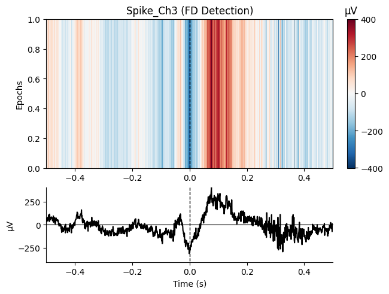
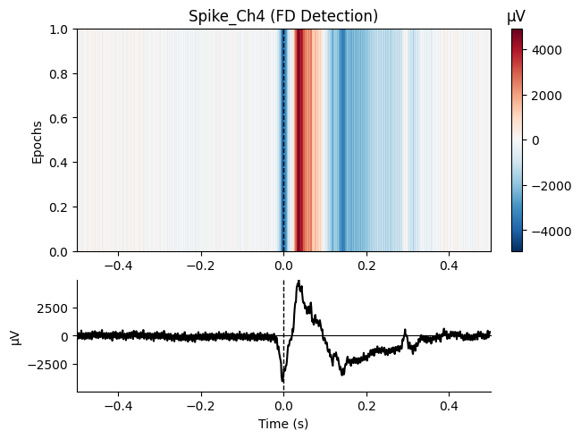
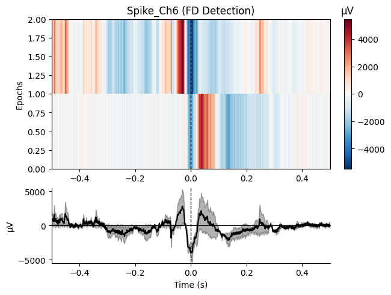
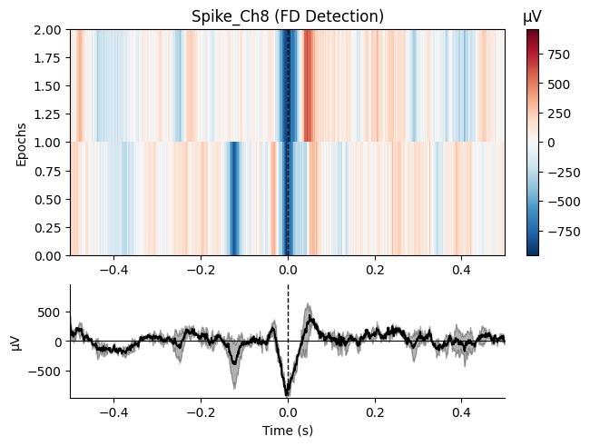
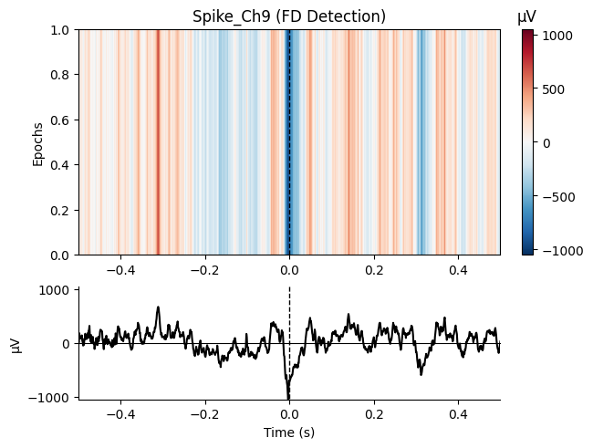
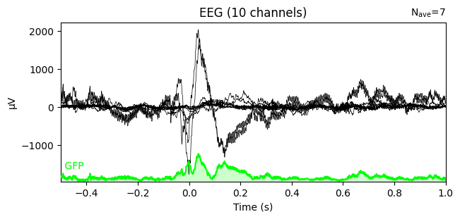
8. Time-Frequency Analysis#
Analyze oscillations around spike times:
# Compute time-frequency representation
freqs = np.arange(1, 50, 1) # 1-50 Hz
n_cycles = freqs / 2 # Number of cycles increases with frequency
# Compute TFR using Morlet wavelets
power = epochs.compute_tfr(
method='morlet',
freqs=freqs,
n_cycles=n_cycles,
use_fft=True,
average=True
)
# Plot TFR
power.plot(
picks='eeg',
baseline=(-0.5, -0.1),
mode='percent',
title="Peri-Spike Time-Frequency"
)
plt.show()
Applying baseline correction (mode: percent)
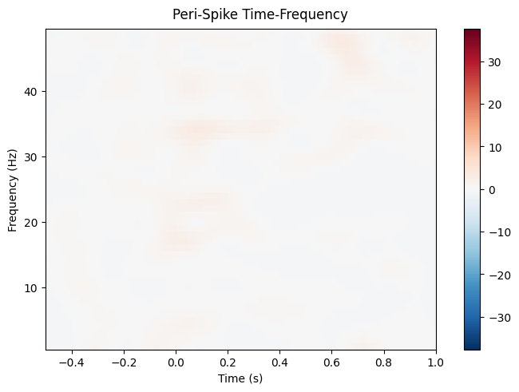
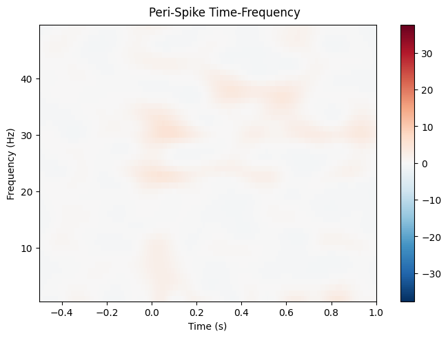
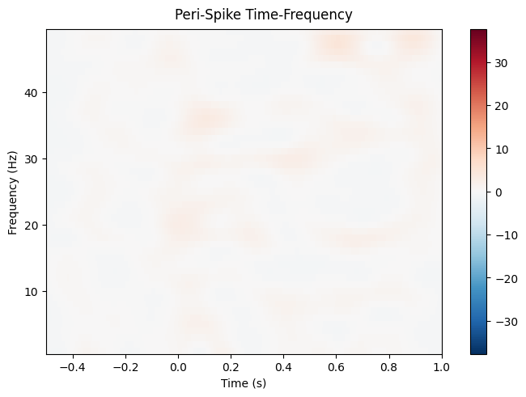
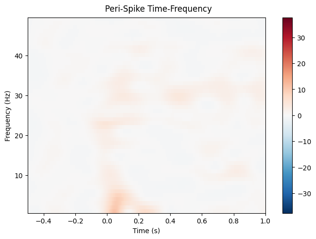
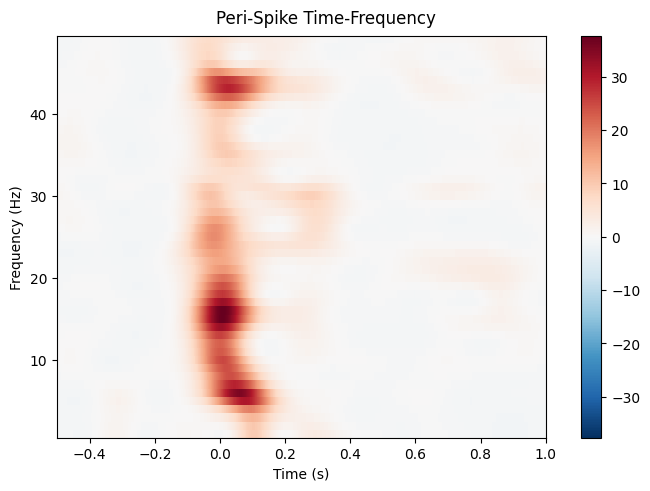
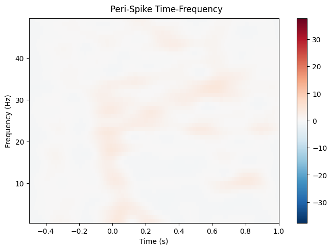
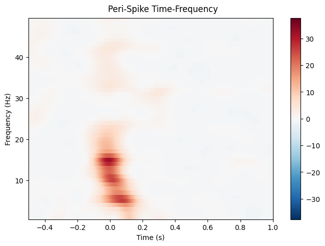
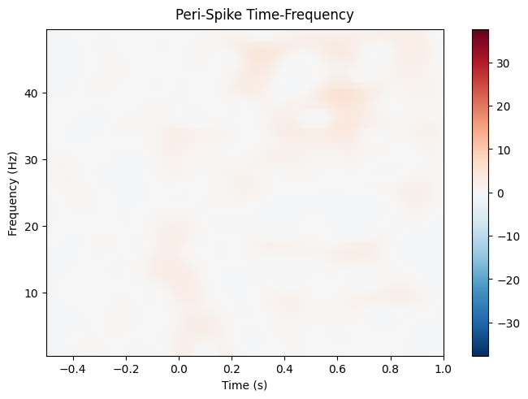
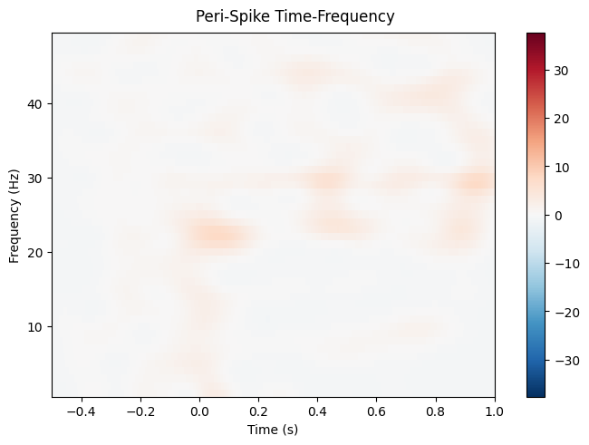
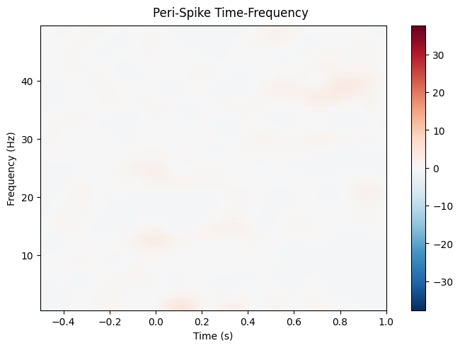
9. Spike-LFP Phase Locking#
Analyze phase relationships between spikes and LFP oscillations:
# Filter for specific frequency band (e.g., theta: 4-8 Hz)
epochs_filtered = epochs.copy().filter(
l_freq=4,
h_freq=8,
method='iir'
)
# Apply Hilbert transform to get instantaneous phase
epochs_hilbert = epochs_filtered.apply_hilbert()
# Extract phase at spike time (t=0)
spike_phases = np.angle(epochs_hilbert.get_data()[:, :, epochs.time_as_index(0)[0]])
# Plot phase distribution
plt.figure(figsize=(10, 5))
plt.subplot(1, 2, 1)
plt.hist(spike_phases.flatten(), bins=50, density=True)
plt.xlabel("Phase (radians)")
plt.ylabel("Density")
plt.title("Spike Phase Distribution")
# Polar plot
plt.subplot(1, 2, 2, projection='polar')
plt.hist(spike_phases.flatten(), bins=50, density=True)
plt.title("Spike Phase (Polar)")
plt.tight_layout()
plt.show()
Setting up band-pass filter from 4 - 8 Hz
IIR filter parameters
---------------------
Butterworth bandpass zero-phase (two-pass forward and reverse) non-causal filter:
- Filter order 16 (effective, after forward-backward)
- Cutoffs at 4.00, 8.00 Hz: -6.02, -6.02 dB
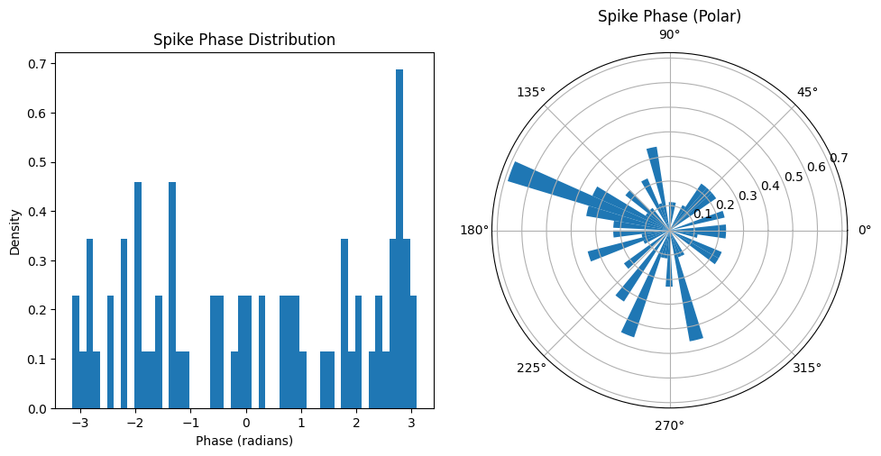
10. Integrating with WAR#
Spike counts become an ordinary WAR feature via read_sars_spikes, which bins each
session’s spike times into the WAR’s existing time windows and fills in nspike and
lognspike.
Asking compute_windowed_analysis for nspike on its own does not do this (it will return an all-NaN placeholder). The counts only arrive through read_sars_spikes.
Note that read_sars_spikes must run on an unfiltered WAR, since dropping rows first shifts the window edges and misassigns counts.
# Compute the windowed analysis, then fold in the detected spikes
war = analyzer.compute_windowed_analysis(
features=['rms', 'psdband'],
multiprocess_mode='serial'
)
war = war.read_sars_spikes(fdsars, read_mode='sa', inplace=True)
# nspike holds one count per channel for each time window
result = war.get_result(['nspike'])
print(f"Windows: {len(result)}")
print(f"Spike counts in the first window: {result['nspike'].iloc[0]}")
print(f"Total binned spikes: {np.nansum(np.stack(result['nspike'].to_numpy())):.0f}")
# Plot spike counts over time
ap = AnimalPlotter(war)
ap.plot_linear_temporal(features=['nspike'])
Windows: 12
Spike counts in the first window: [0. 0. 0. 0. 0. 0. 0. 0. 1. 0.]
Total binned spikes: 7
INFO:root:Computing windowed analysis for Cage 3 F22-0_ColMajor.bin...
Processing rows: 0%| | 0/12 [00:00<?, ?it/s]
Processing rows: 100%|██████████| 12/12 [00:00<00:00, 204.45it/s]
INFO:root:Added LOF scores for F22 KO Dec-12-2023: 10 channels
INFO:root:Total LOF scores collected: 1 animal days
INFO:root:Channel names: ['D-009', 'D-010', 'D-012', 'D-014', 'D-015', 'D-016', 'D-017', 'D-019', 'D-021', 'D-022']
INFO:root:Channel abbreviations: ['LAud', 'LVis', 'LHip', 'LBar', 'LMot', 'RMot', 'RBar', 'RHip', 'RVis', 'RAud']
/home/runner/work/neurodent/neurodent/src/neurodent/results/war_spikes.py:166: FutureWarning: DataFrameGroupBy.apply operated on the grouping columns. This behavior is deprecated, and in a future version of pandas the grouping columns will be excluded from the operation. Either pass `include_groups=False` to exclude the groupings or explicitly select the grouping columns after groupby to silence this warning.
spike_counts = grouped.apply(
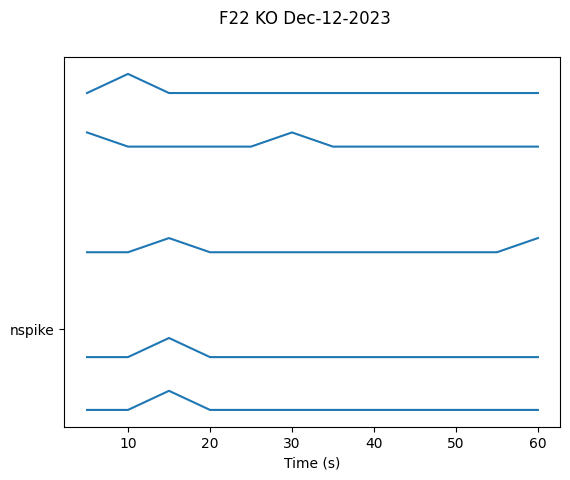
Next Steps#
Visualization Tutorial: Advanced plotting for spike data
Windowed Analysis Tutorial: Combine spike counts with other features